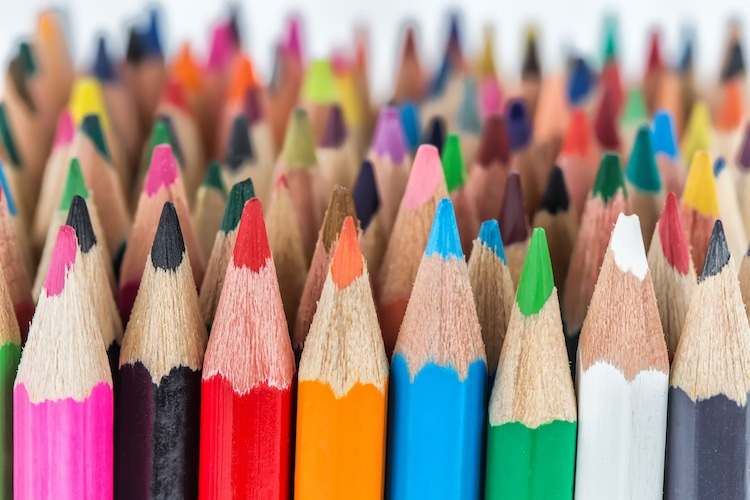

This year I played tennis for the school team. This was my first time playing on the High School team and I had a lot of un. I played mostly doubles and got to hangiut with my friends on the team a bunch
In my free time I worked on art in my free time with colored pencils. I've always liked art but recently I've been getting into realistic colored pencil art. I have a ton of colored pencils at home so I am lucky to have the supplies avalible